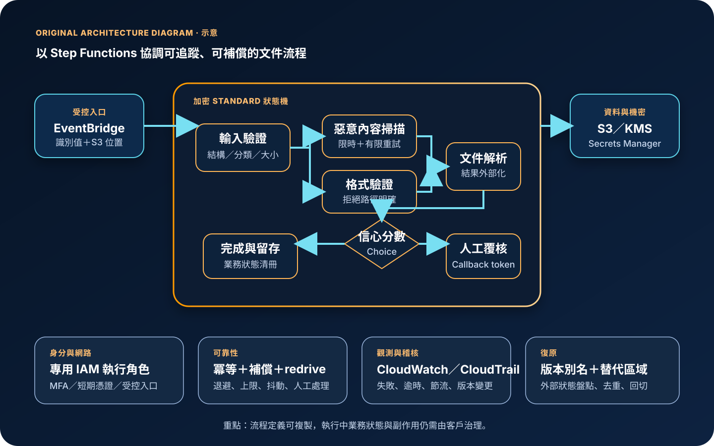

AWS Step Functions：工作流程協調、錯誤處理與安全治理
AWS Step Functions 是受管工作流程服務，以狀態機描述步驟、分支、等待、平行處理、錯誤處理與服務呼叫。它適合把多個 AWS 服務或 HTTPS API 組合成可追蹤流程，但不會替下游系統保證業務交易原子性、消除所有重複副作用，或自動建立跨區災難復原。
作者：Dr. William｜查閱與發布：2026-09-24
服務定位
AWS Step Functions 位於事件入口、應用服務與資料服務之間，使用 Amazon States Language 定義狀態機。工作流程可直接整合 Lambda、ECS、Batch、DynamoDB、SQS、SNS、EventBridge，以及大量 AWS API；也能透過 HTTP Task 呼叫受控的 HTTPS 端點。視覺化執行紀錄可顯示流程停在哪一步、輸入與輸出如何變化，以及錯誤是否進入重試或補償路徑。
Step Functions 不是訊息佇列、事件匯流排、資料庫交易協調器、通用程式執行環境或零程式碼安全邊界。需要大量訊息緩衝與消費者速率控制時通常搭配 SQS；需要事件內容路由與多目標扇出時可使用 EventBridge 或 SNS；需要跨系統強一致交易時，仍須由應用程式設計冪等、補償與資料一致性策略。
核心概念與適用邊界
主要元件
- 狀態機與執行：狀態機是流程定義；每次啟動會建立獨立執行，依輸入、分支與工作結果推進。
- 工作狀態：Task 執行服務呼叫；Choice 分流；Parallel 同時執行分支；Map 對集合反覆處理；Wait、Pass、Succeed 與 Fail 控制流程。
- 服務整合模式：Request Response 等待 API 回應；Run a Job 等待工作完成；Callback 使用 task token 等候外部系統或人工回覆。
- Standard 工作流程：適合長時間、耐久且需要稽核的流程；支援最長一年執行與服務保存的執行歷史。
- Express 工作流程：適合高事件量、短時間流程；最長五分鐘，執行細節依 CloudWatch Logs 設定取得。
- Retry、Catch 與 redrive：可對指定錯誤做有限重試、退避與替代路徑；符合條件的 Standard 失敗執行可從失敗步驟重新驅動。
邊界與依賴
- 工作流程類型建立後不可直接變更；Standard 與 Express 的執行保證、時間、歷史、日誌與計價模式不同。
- 單一工作狀態或執行的輸入與輸出受 256 KiB 限制；大型檔案應存於 S3，只在流程傳遞位置與摘要。
- Standard 執行歷史有事件數上限；高迴圈或大量內嵌 Map 可能在業務完成前耗盡歷史容量。
- 服務整合成功只代表 API 或工作回報成功，不代表跨系統業務狀態已達成原子一致。
- Retry、redrive、事件來源重送與下游逾時都可能造成重複呼叫；具副作用的工作必須支援冪等。
- 狀態機與多數整合資源具有區域性；跨區工作流程、資料、身分、金鑰與事件入口需要另外建立。
適合與不適合的使用情境
適合
- 訂單、影像處理、資料管線、帳號開通或事件回應需要多步驟、分支、平行、等待與補償。
- 流程需要清楚的執行狀態、錯誤位置、重試紀錄與人工核准等待點。
- 希望直接協調多項 AWS 服務，減少自行維護輪詢、狀態資料庫與流程控制程式。
- 需要以版本與別名逐步部署工作流程，並把生產啟動固定到受控版本。
不適合或不能單獨完成
- 只需傳遞大量獨立訊息、長時間累積工作或讓工作者依容量主動拉取時。
- 流程資料超過負載限制，卻沒有把大型內容外部化至 S3 或其他資料存放區時。
- 要求跨資料庫與第三方服務的強一致原子交易，且不能接受補償或最終一致性時。
- 工作只有單一短函式呼叫，沒有協調、可視化、錯誤分支或治理需求時。
示意故事案例：醫療文件處理的可追蹤工作流程
以下為示意案例，不代表特定醫療機構或正式部署。 一個文件平台收到使用者上傳完成事件後，由 EventBridge 啟動 Step Functions Standard 工作流程。入口只傳遞文件識別值、S3 物件位置、資料分類與追蹤識別值，不把文件正文、密碼、長期憑證或連線資訊放入執行輸入。
狀態機先檢查輸入，再平行執行惡意內容掃描與格式驗證。通過後呼叫文件解析工作，將結果存回加密資料儲存；Choice 狀態依信心分數決定直接完成或等待人工覆核。暫時性服務錯誤採有上限且含抖動的退避重試，業務拒絕直接進入人工處理，永久技術失敗送出受控告警並記錄待處理項目。執行角色只可呼叫指定資源，狀態機與資料使用 KMS 加密，第三方 API 驗證資料由 EventBridge Connection 與 Secrets Manager 管理。CloudWatch 監控失敗、逾時、節流與執行時間，CloudTrail 稽核定義、角色、金鑰、版本與啟動操作；替代區域預先建立相同版本、別名與依賴資源，並以外部工作狀態清冊演練切換。

建置與運作流程
- 定義業務狀態：先畫出成功、等待、拒絕、逾時、可重試失敗與需補償失敗；每一步標示輸入、輸出、擁有者與完成條件。
- 選擇工作流程類型：依執行時間、吞吐、稽核、執行保證與成本選擇 Standard 或 Express；不要只依單次價格選型。
- 縮減執行資料：只在狀態間傳遞識別值與必要欄位；大型或敏感內容存入加密 S3、DynamoDB 或資料庫，並設定生命週期。
- 設計服務整合：選擇直接回應、等待工作完成或 callback；為每個 Task 設定逾時、心跳及可驗證的完成訊號。
- 建立錯誤分類：只對節流或短暫故障重試，使用退避、最大延遲與抖動；驗證失敗或權限錯誤應快速進入明確處理路徑。
- 實作冪等與補償：以業務識別值避免重複扣款、重複通知或重複建立資源；為已完成的副作用定義可審核補償步驟。
- 限制執行角色：每個狀態機使用專用角色，只允許必要 API、資源、區域與條件；跨帳號整合另設目標角色及信任限制。
- 保護金鑰與連線：狀態機依分類使用 KMS；應用機密放入 Secrets Manager 或 Parameter Store。HTTP Task 使用 EventBridge Connection，不在 ASL 放入驗證資料。
- 啟用觀測：設定 CloudWatch 指標、日誌、告警與追蹤識別；Express 必須配置所需執行日誌，敏感欄位先縮減或遮蔽。
- 版本化部署：驗證 ASL 後發布不可變版本，以別名進行漸進式導流；事件來源與呼叫端指向受控別名而非未限定 ARN。
- 建立復原程序：匯出定義與依賴設定至基礎設施即程式碼，在替代區域建立事件入口、角色、金鑰、日誌與下游資源，演練未完成工作盤點、去重、重啟及回切。
成本、可用性與維運考量
Standard 工作流程主要依狀態轉換數計費，重試與 redrive 也會增加狀態轉換；Express 依請求次數、執行時間與記憶體用量計費。Lambda、ECS、Batch、DynamoDB、SQS、SNS、EventBridge、KMS、CloudWatch Logs、X-Ray、資料傳輸、PrivateLink 或 VPC Lattice 等整合服務另行計費。過細的狀態拆分、無上限重試、過大的 Map 並行度、完整負載日誌與失控循環都可能放大費用。
Step Functions 管理區域內工作流程基礎設施，但端對端可用性仍取決於事件來源、IAM、KMS、服務配額、整合端點、下游容量、資料儲存與錯誤路徑。Standard 適合耐久與稽核流程；Express 適合短時高量工作，但執行歷史依 CloudWatch Logs，且日誌傳遞屬盡力而為。要求保證保存時，應把必要業務狀態寫入適當資料儲存。
Step Functions 不會跨區自動複寫狀態機執行。復原設計應區分「尚未開始」、「執行中」、「已產生部分副作用」與「已完成但入口未確認」等狀態，使用外部業務清冊與冪等鍵決定重啟、補償或人工處理；單純在另一區域複製 ASL 並不足以安全復原。
AWS Step Functions 特有資安風險與控制
- 執行角色權限過大：依狀態機與環境建立專用最小權限角色，限制動作、資源、區域、來源與跨帳號目標角色；嚴格控制 iam:PassRole。
- 執行輸入、輸出與歷史洩漏：狀態資料、錯誤 Cause、CloudWatch Logs 與追蹤資訊不得含密碼、Access Key、Secret Key、Token、cookie、完整醫療資料或不必要個資。
- 工作流程注入或輸入操控：在入口驗證結構、型別、允許值與資源識別；不得讓未受信任輸入任意決定 API 動作、資源 ARN、角色或外部 URL。
- 重試造成重複副作用：只重試可安全重做的錯誤，以冪等鍵、條件寫入與業務狀態防止重複扣款、寄送或建立資源。
- task token 外洩：callback token 視為一次性敏感授權資料，不寫入一般日誌、網址、訊息正文或前端；設定流程逾時並限制接收與回傳通道。
- HTTP Task 憑證外露：使用 EventBridge Connection 與 Secrets Manager 保存驗證資料，限制 states:InvokeHTTPEndpoint、連線與 Secret 的存取；核准網域、方法及網路路徑。
- KMS 權限中斷或擴大：客戶管理金鑰以 stateMachineArn 加密內容與 kms:ViaService 條件限制，監控停用、刪除排程、政策與授權變更，並測試替代區域金鑰。
- 日誌與稽核缺口：Standard 視需要啟用 CloudWatch Logs；Express 明確配置執行日誌。CloudTrail 管理事件之外，依風險評估 Step Functions 資料事件並控制成本。
- 版本漂移：生產入口使用版本或別名，變更需經驗證、審查及漸進導流；不要讓未限定 ARN 自動採用最新修訂。
- 配額耗盡：監控 StartExecution、狀態轉換、HTTP Task、Map 並行度與下游節流；重試設定最大次數、最大延遲與抖動，避免故障風暴。
- 跨區復原重複執行：維持外部工作狀態與唯一識別，切換前凍結或隔離原區域入口，核對部分副作用後再啟動替代區域。
共同責任邊界
AWS 負責 Step Functions 受管服務及底層雲端基礎設施的安全、維護與區域內服務運作。客戶負責狀態機邏輯、工作流程類型、輸入輸出資料、執行角色、服務整合、KMS、日誌、錯誤分類、冪等、補償、版本部署、成本控制與跨區復原。
客戶仍須落實 IAM 最小權限、人員 MFA 與短期憑證、帳號與網路隔離、公開存取盤點、KMS 加密、Secrets Manager／Parameter Store 管理設定、CloudTrail／CloudWatch 觀測，以及狀態機定義、外部業務狀態、資料與下游服務的備份及跨區復原。AWS 不會替客戶判斷輸入是否合法、確保補償符合業務規則，或保證下游 API 的副作用完全一次。
上線前可執行檢查清單
- □ 已依執行時間、吞吐、歷史、稽核、執行保證與成本選擇 Standard 或 Express。
- □ 狀態機定義已驗證，成功、拒絕、逾時、暫時失敗、永久失敗與補償路徑均有測試。
- □ 執行輸入與輸出只含必要識別值與欄位，大型內容已外部化，最壞情境仍低於負載限制。
- □ 任何 credential、Access Key、Secret Key、Token、密碼或 cookie 都未寫入 ASL、輸入、輸出、錯誤、日誌或通知。
- □ 每個 Task 都有適當 TimeoutSeconds；需要長工作時已設定心跳、完成訊號與取消策略。
- □ Retry 只涵蓋暫時性錯誤，已設定最大次數、退避、最大延遲與抖動，且估算額外成本。
- □ 具副作用的工作已使用冪等鍵、條件寫入或去重紀錄，redrive 與事件重送不會重複執行業務動作。
- □ 補償步驟具授權、審核與證據保存，不能補償的狀態會轉交人工處理。
- □ 狀態機執行角色只允許指定服務、動作與資源；iam:PassRole 與跨帳號 AssumeRole 已縮限。
- □ 人員使用聯合登入、MFA 與短期憑證；定義、版本、別名、角色、日誌與金鑰管理權限已分離。
- □ 公開入口已透過 API Gateway、EventBridge 或其他受控服務驗證與限流；Step Functions API 存取符合網路隔離要求。
- □ 狀態機與活動的 KMS 選項、金鑰政策、加密內容、停用風險及替代區域金鑰已測試。
- □ HTTP Task 使用 EventBridge Connection；驗證資料由 Secrets Manager 管理，允許的網域、方法與 Secret 權限均已限制。
- □ Standard 已依需要啟用日誌；Express 已配置 CloudWatch Logs，且日誌層級、保留期、遮蔽及費用符合要求。
- □ CloudWatch 監控失敗、逾時、節流、執行時間、開啟執行與成本異常；告警有明確處理人與程序。
- □ CloudTrail 集中保存 Step Functions、IAM、KMS、版本與別名管理事件；高風險變更會告警。
- □ 生產呼叫端使用受控版本或別名，新版本先經小流量驗證並可快速回復。
- □ 已盤點狀態轉換、請求、執行時間、記憶體、日誌、KMS、整合服務、網路與跨區待命成本。
- □ 替代區域的狀態機、版本、別名、角色、金鑰、事件入口、資料與下游已建立並完成切換演練。
AWS 官方一手來源
- What is AWS Step Functions?（查閱：2026-09-24）
- Choosing workflow type in Step Functions（查閱：2026-09-24）
- Discovering workflow states to use in Step Functions（查閱：2026-09-24）
- Integrating services with Step Functions（查閱：2026-09-24）
- Handling errors in Step Functions workflows（查閱：2026-09-24）
- Restarting state machine executions with redrive（查閱：2026-09-24）
- Step Functions service quotas（查閱：2026-09-24）
- Identity and Access Management in Step Functions（查閱：2026-09-24）
- Data at rest encryption in Step Functions（查閱：2026-09-24）
- Call HTTPS APIs in Step Functions workflows（查閱：2026-09-24）
- Using CloudWatch Logs to log execution history（查閱：2026-09-24）
- Recording Step Functions API calls with AWS CloudTrail（查閱：2026-09-24）
- Manage continuous deployments with versions and aliases（查閱：2026-09-24）
- AWS Step Functions pricing（查閱：2026-09-24）
- AWS Well-Architected Security Pillar｜Shared responsibility（查閱：2026-09-24）
內容說明
本文依查閱日可用的 AWS 官方文件整理，作為基礎學習與架構討論材料；實際部署仍須依最新功能、區域支援、價格、配額、組織政策、資料分類、法規及復原演練結果調整。